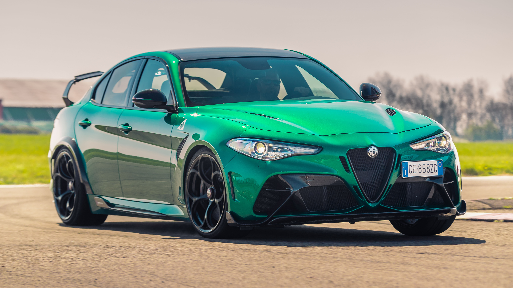

Alfa Romeo Giulia (Italian pronunciation: [ˈdʒuːlja]) is the name of three not directly related model (line)s from Italian carmaker Alfa Romeo. The first were the four-door Type 105 entry-level compact executive sports sedans produced from 1962 to 1978; the second are the updated (mainly up-engined) Spider, Sprint, and Sprint Speciale Alfa Giuliettas, and in 2015, Alfa Romeo revived the Giulia name, again for a compact executive car (type 952).
 detaluri informacia